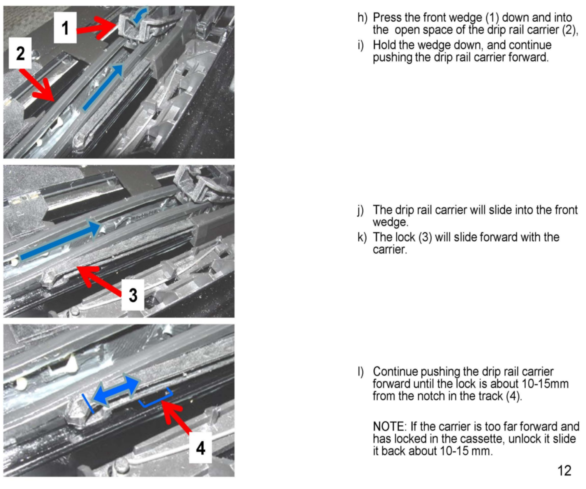

Operation CHARM
: Car repair manuals for everyone.
Home
>>
BMW
>>
2007
>>
X3 3.0si (E83) L6-3.0L (N52K)
>>
Repair and Diagnosis
>>
Technical Service Bulletins
>>
All Technical Service Bulletins
>>
Body - Repair Instructions For The Panoramic Sunroof
>>
Attachments
>>
Front Glass Mechanism Repair - E53, E61, E70, E83, E91
Front Glass Mechanism Repair - E53, E61, E70, E83, E91
Sunroof Cassette Front Glass Panel Mechanism Replacement
